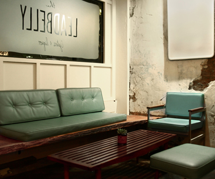
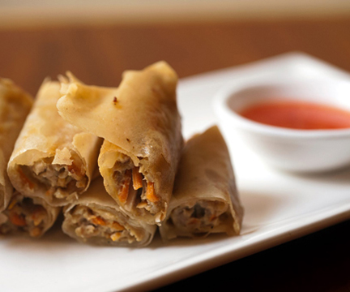
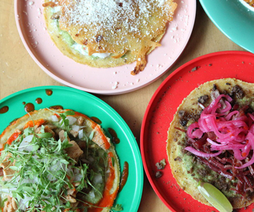
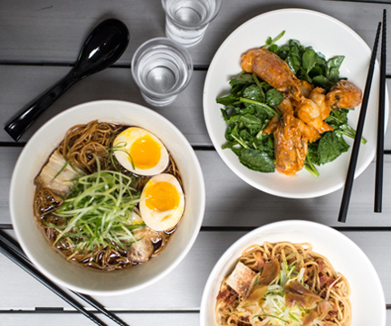
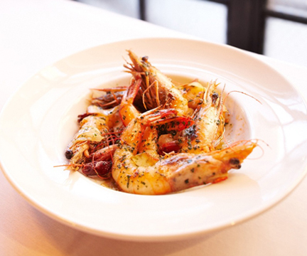
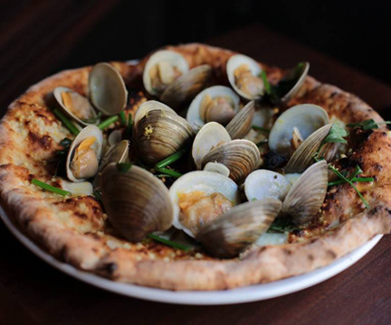

MY Picks
- 
Leadbelly
14 Orchard Street (at Canal Street); 646-596-9142.
The place somewhat resembles the basement of your college dorm, but you can use that as an excuse to get college-style tipsy. There's an epic cocktail list, featuring liqueurs you're never even heard of, plus lots of yummy little plates of cheeses and baba ghanoush. You know, for when you get the late-night munchies.
- 
Kuma Inn
1113 Ludlow Street (between Delancey and Rivington); 212-353-8866.
If you hate sharing, Kuma Inn is not the place for you. The menu is 100% tapas, with chef King Phojanakong pulling culinary inspo (and talent) from his Filipino mother and Thai father. The small plates are a good way to get to know these flavors, with fan favorites like the drunken spicy shrimp with sake and baby octopus with bamboo shoots. Oh, and it's BYOB. You don't have to share that part, if you don't want.
- 
Mission Cantina
1172 Orchard Street (at Stanton Street); 212-254-2233.
The bold blue and red exterior at this corner spot makes way for bright, colorful, neon lights. The playfulness keeps right on coming with Mission's "whimsical" Mexican cuisine, which features slight Asian touches. The tacos are inventive, but the shared plates are even more experimental, like smoked pork jowl with peanuts and fried lime leaves, or a three-egg omelette with sea urchin.
NEW Restaurants
- 
Ivan Ramen
25 Clinton Street (between E.Houston/Stanton); 646-678-3859
A Jewish kid from Long Island who opened a ramen shop in Tokyo? You have to admire the chutzpah. Chef Ivan Orkin succeeded with the noodle connoisseurs in Japan, and then opened another shop here on the Lower East Side. Of course the ramen is amazing, (hello triple-pork, triple-garlic!), but there are other great dishes too, like the braised beef tongue.
- 
Cata
245 Bowery (between Stanton/Prince); 212-505-2282.
The vivid red and yellow interior invokes the flag of Spain, preparing you for the Catalan tapas you're about to inhale. The menu is divided into categories of sea, land, and vegetables, so there will be an option (or five) for everyone at your table. Oh, and the wide selection of gin and tonics is a refreshing kick against all of those bright flavors.
- 
Louie & Chan
303 Broome Street (at Forsyth Street); 212-837-2816.
Of all the culinary mashups, Italian and Chinese? Louie & Chan pulls it off, with an Italian restaurant upstairs and a Chinese lounge/club downstairs. The food is pasta and pizza with special little details, like shelled clams and lemon zest, or kale and guanciale. The fun continues with Chinese cocktails — the signature Chan's Tonic contains 14 herbal ingredients that are infused for a year before hitting your glass.